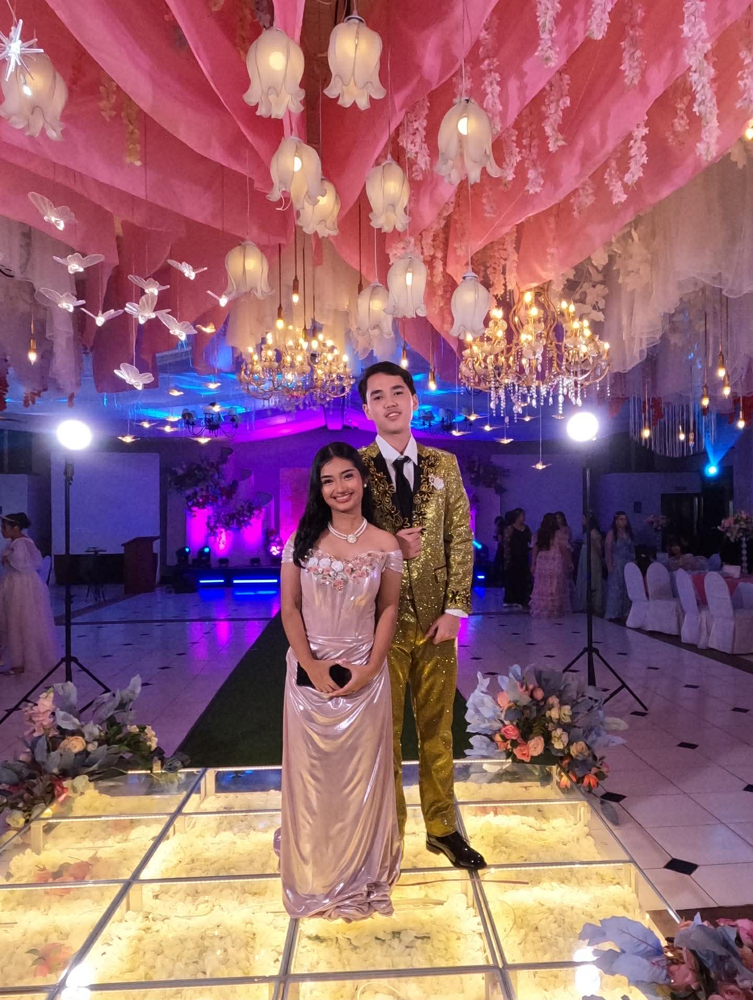

PROM 2026 was one of the most unforgettable nights of my senior high life. It was filled with laughter, music, and beautiful memories that I will always cherish. The night became even more special when I was awarded Star of the Night.
I attended prom with Alexandra Montero. We prepared for weeks, choosing outfits and planning how we wanted the night to be special. Last year, I was honored to be Prom Prince, so this year felt even more meaningful. It truly felt like a full-circle moment.

A beautiful moment captured during the event, with elegant decorations and warm lights that made the atmosphere magical and romantic.
My favorite song that night was “Easy to Fall in Love.” When it started playing, the atmosphere became soft and romantic. Many couples slow danced, and it made the moment feel magical and unforgettable.
PROM 2026 was more than just a school event. It was a celebration of friendship, growth, and achievement. From being Prom Prince last year to receiving the Star of the Night award this year, it is a journey I will always be proud of. It is a night that I will never forget.